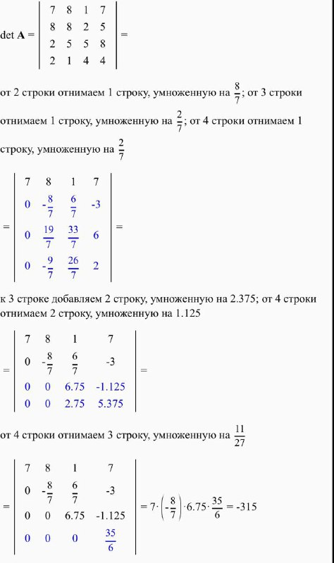

Перестановка стовпців або рядів, щоб на діагоналі не було нулів виконується правильно. Знаходження максимального числа матриці та виведення всіх максимальних елементів та їх індексів. Заміна максимальним елементом нулів в матриці виконується вірно. Детермінант обчислює правильно, можна перевірити в онлайн калькуляторі.
